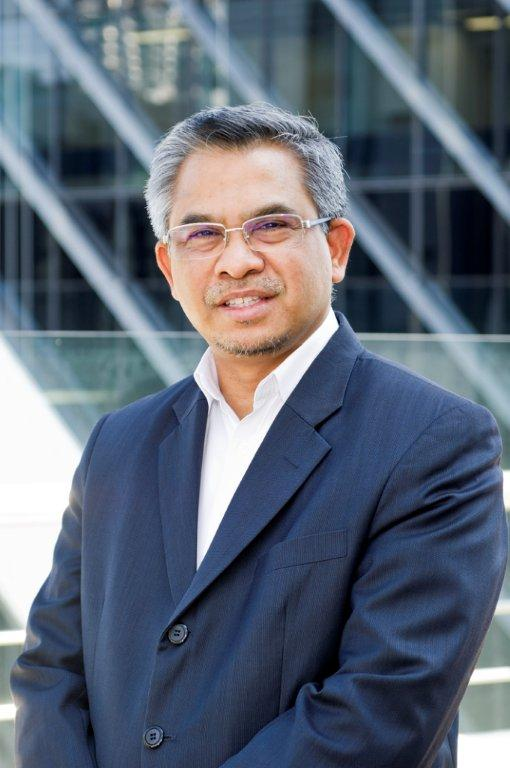

SPEAKERS
KEYNOTE SPEAKER

Tan Sri Prof Dr Mohd Kamal Hassan
Former Rector, International Islamic University Malaysia ( IIUM )
He started his academic career at the National University of Malaysia, where he chaired the Department of Usuluddin and Philosophy in 1979 and was later made a full professor. He then joined IIUM, where he founded the Faculty of Islamic Revealed Knowledge and Human Sciences in 1983. He succeeded Professor Emeritus Dato' Abdul Hamid Ahmad Abu Sulayman as the third Rector of IIUM on 5 April 1998 and served the office before passing it to Professor Dato' Sri Syed Arabi Syed Abdullah Idid. To mark his contributions to the country, he was chosen to be a National Academic Figure in 2017.[3] He left IIUM on 30 July 2018 after 42 years of service to Malaysian education, on which IIUM awarded him with the title of Professor Emeritus. Before exiting IIUM, he was a Distinguished Professor[4] at its Centre of Islamisation. He was one of three academicians in Malaysia who was promoted to the rank of Distinguished Professor by the Ministry of Higher Education in 2010.
Plenary Speech 1
DATUK DR MOHD DAUD BAKAR
Datuk Dr. Mohd Daud Bakar is the Founder and Executive Chairman of Amanie Group. One of its flagship companies namely Amanie Advisors is operating in a few cities globally. He currently serves as the Chairman of the Shariah Advisory Council at the Central Bank of Malaysia, the Securities Commission of Malaysia, the Labuan Financial Services Authority, and the First Abu Dhabi Bank. He is also a Shariah board member of various global financial institutions, including the National Bank of Oman (Oman), Amundi Asset Management (France), Bank of London and Middle East (London), BNP Paribas Najma (Bahrain), Guidance Financial (USA), Salama Insurance (Dubai), Natixis Bank (Dubai), Oasis Asset Management (South Africa), Noor Islamic Bank (Dubai), Bank al-Khayr (Bahrain), Morgan Stanley (Dubai), Franklin Templeton (Kuala Lumpur and Luxembourg), Sedco Capital (Saudi and Luxembourg), Cagamas Berhad (Malaysia) and Dow Jones Islamic Market Index (New York) amongst many others. In the corporate world, he sits as a Board Director at Sime Darby Berhad and a member of the PNB Investment Committee. He is also the third Chair Professor in Islamic Banking and Finance of Yayasan Tun Ismail Mohamed Ali Berdaftar (YTI) PNB at Faculty of Economics and Muamalat, Universiti Sains Islam Malaysia (USIM). In 2016, he received the “Award of Excellence for Outstanding Contribution for Shariah Leadership & Advisory” at London Sukuk Summit Awards and “Shariah Adviser Award” at The Asset Triple A Islamic Finance Award. In 2014, he received the “Most Outstanding Individual” award by His Majesty, the King of Malaysia, in conjunction with the national-level Prophet Muhammad’s birthday. Under his leadership, Amanie Advisors received the “Islamic Economy Knowledge Infrastructure Award” at the Global Islamic Economy Summit, Dubai 2015, by His Highness Sheikh Mohammed bin Rashid Al Maktoum, Vice President and Prime Minister of the UAE and Ruler of Dubai, Oct 2015. Prior to this, he was the Deputy Vice-Chancellor at the International Islamic University Malaysia. He received his first degree in Shariah from the University of Kuwait in 1988 and obtained his Ph.D. from University of St. Andrews, the United Kingdom in 1993. In 2002, he completed his external Bachelor of Jurisprudence at University of Malaya. His first book entitled “Shariah Minds in Islamic Finance: An Inside Story of A Shariah Scholar” has won the “Islamic Finance Book of the Year 2016” by the Global Islamic Finance Award (GIFA) 2016. His newly released book on Sukuk entitled “An Insightful Journey to Emirates Airline Sukuk: Pushing The Boundaries of Islamic Finance” has also won the “Best Islamic Finance Case 2017” by the GIFA 2017 in Kazakhstan.
Plenary Speech 2

PROF. DATO’ IR. DR. WAN RAMLI WAN DAUD FASc
Prof. Dato’ Ir. Dr. Wan Ramli Wan Daud FASc is the Professor of Chemical Engineering at Department of Chemical & Process Engineering, Faculty of Engineering & Built Environment, Universiti Kebangsaan Malaysia since 1996 and Principal Research Fellow at the Fuel Cell Institute, Universiti Kebangsaan Malaysia since 2006. He is also the Founding Director of the Fuel Cell Institute, Universiti Kebangsaan Malaysia in 2007-2013 and Fellow of Academy of Science Malaysia since 2012. For his leading role in distinguished scientific work, he was awarded the Darjah Setia Pemangku Negeri from the Pulau Pinang state government which carries the title Dato’ in 2013. He was awarded the BEng degree (First Class Hon.) from the University of Monash in 1978 and the Ph.D. degree from the University of Cambridge in 1984. He was a Tutor at UKM (1979-1984), a lecturer (1984-1989), Associate Professor (1990-1995) and Professor of Chemical Engineering from 1996 until now. He was appointed the Head of Department of Chemical & Process Engineering, Faculty of Engineering UKM (1986-1988), Deputy Dean of Engineering UKM (1990-1993, 1995-1998) and was the Founding Director of the Fuel Cell Institute UKM (2007-2013). He is a World expert in zero-emission renewable hydrogen energy from biomass, wastewater, methanol and solar energy, on fuel cells using hydrogen, methanol, and wastewater as fuels and on sustainable drying technology. In recognition of his scientific work, Professor Wan Ramli was honored with the Merdeka Award 2016 for Outstanding Scholastic Achievement, Malaysia’s top award for Malaysian scientists, on 23 September 2016 for outstanding scholarly research and development in advancing the technology of fuel cells and hydrogen energy in Malaysia, the region and the world. He has published 953 articles including 361 articles in international journals, 367 articles in proceedings of international conferences and 225 articles in proceedings of national conferences. He has published 2 international research books and 2 national books. He contributed 2 chapters in international research books and 5 chapters in national research books. He has been cited in international journals 5,389 times in ISI WOS with H-index 38, 6,256 times in SCOPUS with H-index 41 and 10,106 times in Google Scholar with H-index 48. He was listed as one of the World’s Most Influential Scientific Minds in engineering twice in 2015 and 2017 by Thomson Reuters for having the highest number of papers that are highly cited He was awarded the Award for Excellence in Research in Drying of Agricultural Products and Outstanding Contribution to the Development of Drying Technology 2011, the Outstanding Contribution to the Drying Community 2009 Award, the IChemE Highly Commended Shell Energy Award 2008, the ASEAN Energy Award 2007, and the ASEAN Energy Award 2005. Additionally, for his outstanding achievements in invention and innovations, he won two Gold medals at the 29th and 33rd Salon International Des Inventions Geneve (2001, 2005), the Environmental award from the Swiss Society for the Protection of the Environment (2001), two Gold medals at World Exhibition of Innovation, Research and New Technologies, Brussels (2007), one Silver medal at 34th Salon International Des Inventions Geneve (2006) and Special Award of the Union des Innovateurs de la Croatie (2006). Internationally, Professor Wan Ramli was invited by the United Nation Department of Economic and Social Affairs (UNDESA) and the Government of Iceland in 2006 to present a keynote paper on fuel cells and hydrogen energy. He was honored with invitations to present 21 keynote and 10 invited papers in China, Iceland, India, Indonesia, Iran, Japan, Malaysia, Netherlands, Philippines, Russia, Singapore, and Thailand. He was appointed the member of the international advisory and scientific panels of the International Association of Hydrogen Energy (IAHE), International Drying Symposium, World Congress of Particle Technology, International Conference on Fuel Cells and Hydrogen Energy Technology, Asian Particle Technology Symposium, Regional Symposium of Chemical Engineering and Asia-Pacific Drying Conference. He was invited a Guest Editor of the International Journal of Hydrogen Energy thrice in 2013, 2015 and 2017.